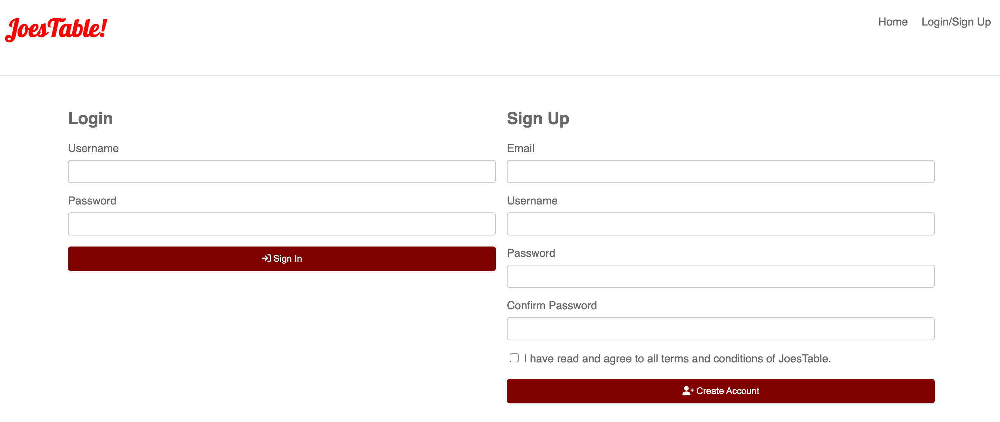
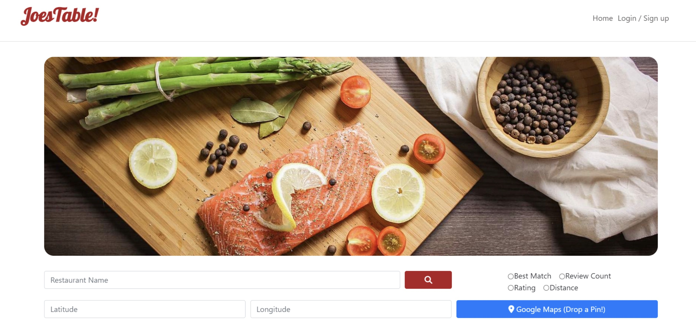
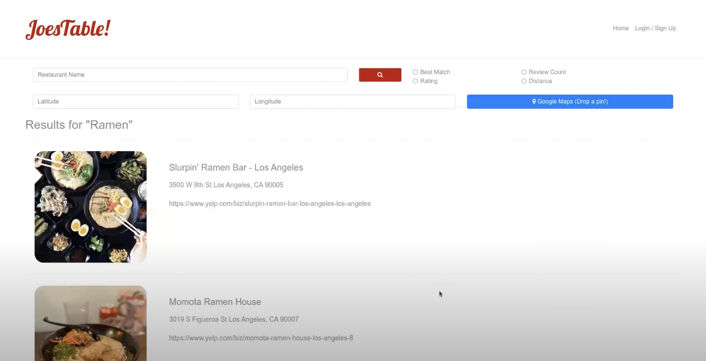
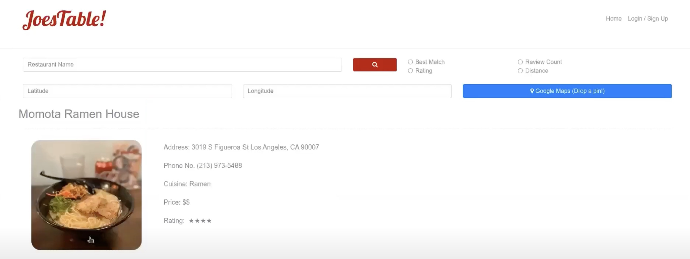
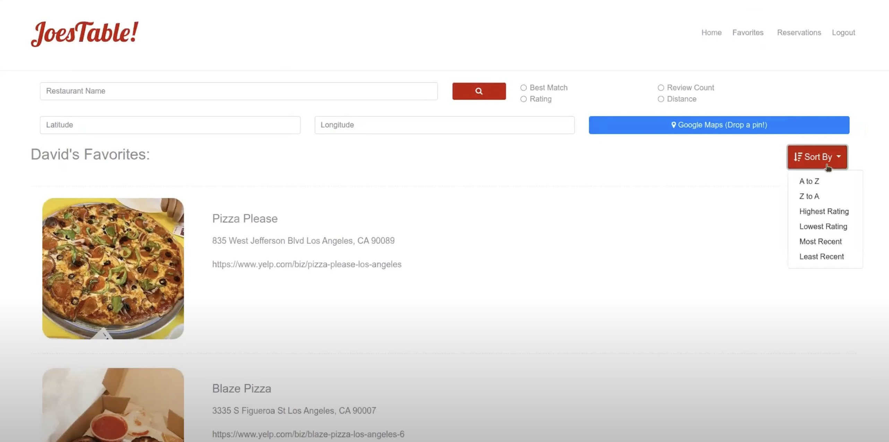
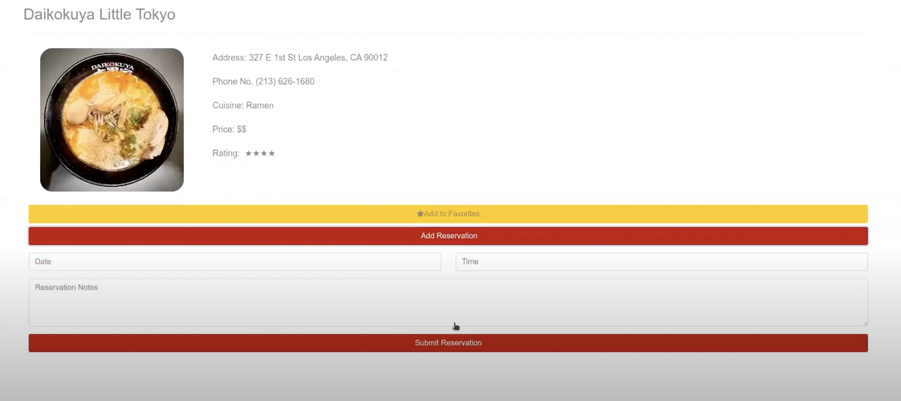

JoesTable
JoesTable is a web application designed to provide users with a seamless and intuitive way to discover and interact with restaurants. It offers powerful search functionality, allowing users to find restaurants based on various criteria and sort results to match their preferences. With detailed restaurant information available at a glance, including ratings and essential details, JoesTable makes exploring dining options simple and convenient. Users can also schedule reservations directly through the platform and create a personalized favorites list, enhancing the overall experience. Whether searching for a specific cuisine or exploring nearby options, JoesTable delivers a streamlined solution for dining discovery and planning.
Request access for source code!
WHAT:
Yelp Recreation Project
WHEN:
Fall 2023
JoesTable is a web application designed to replicate and enhance the Yelp experience, offering users a seamless way to discover and interact with restaurants.
Login/SignUp Page
Home Page
Search Results
Built with a robust stack including Java, HTML/CSS, SQL, and Yelp API integration, JoesTable enables users to search for restaurants by name or geographical coordinates, leveraging Google Maps for precise location-based results.
Search functionality is further enhanced by the ability to filter results using criteria such as best match, rating, review count, or distance.
Restaurant Details
Each restaurant listing displays essential details like ratings and a link to its Yelp page, while clicking on a restaurant reveals comprehensive information such as address, phone number, cuisine type, price range, and ratings. JoesTable also allows users to schedule reservations directly through the platform and add restaurants to a personalized favorites list, making it the ultimate tool for dining exploration and convenience.
Favorites Page
Users can sort the favorite results alphabetically (A to Z or Z to A), by rating (highest to lowest or lowest to highest), or by recency (most recent or least recent).
Reservation Page
Users can make a reservation for a restaurant by entering the desired date, time, and any additional notes or special requests. Once submitted, the reservation details are processed and saved, allowing users to conveniently plan their dining experience with all the necessary information in one place.
JoesTable is a comprehensive solution for discovering, exploring, and interacting with restaurants, offering a user-friendly experience that simplifies dining planning and enjoyment.